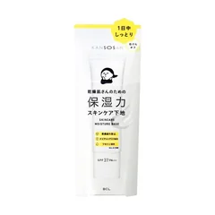

まず1つ（昼に粉をふく人）

乾燥さん
保湿力スキンケア下地 30g
30g・無色・SPF37 PA+++
¥1257税込・出典掲載価格
選び方と声
- 選ぶ条件：昼に小鼻の横や口のまわりが粉をふく人。下地とパウダーくらいで済ませたい人
- ワセリン・セラミド・ナイアシンアミド・アミノ酸の4つの保湿成分入り（メーカー公式）。量はパール粒大で、顔の中心から外へ
- 朝塗って夕方までしっとりが続いた、という声が多い
気になる声気になる点：中が乾いて表面はテカる肌で、上にファンデを重ねると少し重く感じたという声も。クリームと重ねるときは、しっかりなじませてから
販売価格・容量・送料はリンク先でご確認ください